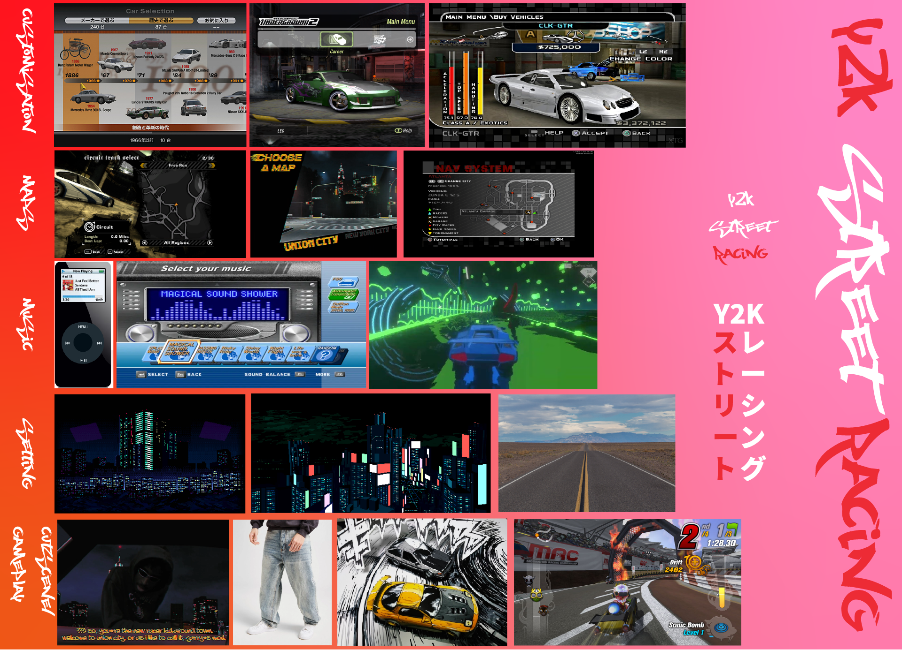

Assignment · 2025
Persona - Y2K PSX Racer
"Let's start with some performance upgrades."
A retro style video game cutscene from the early 2000s playstation era, mixing live action acting with 2D and 3D animated elements.
This assignment brief was simple: adopt a persona through the lens of genre. In this instance, I opted for a Y2K street racing video game aesthetic. I wanted to see how far I could push the gritty and low-res details, while remaining intentional with my design choices.
The result was a polished, era-specific parody of a cheesy character from an imaginary video game cutscene.
